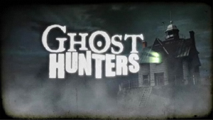

When the Ghost Hunters TV series first launched, do you remember it as Ghost Hunters or as TAPS?
I remember it as TAPS.
When it first aired, I’d seen the name (as TAPS) mentioned in the TV section of a Houston (Texas) newspaper. I didn’t read the article because I was looking for something else. However, I made a mental note to look for the show when it aired. I thought the might be based on the movie, Taps, and I wondered how they’d expand that into a weekly series.
That evening, I saw the TAPS show mentioned on our cable TV’s scrolling show listings. So, I clicked to watch it.
To my surprise, the show was about ghost hunting. At the time, I was writing my first full-length book about ghost hunting, so I was delighted to see a TV series about the same subject.
After that, I watched TAPS for the first two or three seasons, and I can remember when the show started being called Ghost Hunters in our Texas TV listings. I thought the name Ghost Hunters would attract more viewers.
I didn’t think about it again, until I mentioned the name change to Jason Hawes (one of the show’s stars). His reply was almost harsh. He said the show had never been called TAPS. His research team is called “TAPS” (The Atlantic Paranormal Society), but he never allowed Pilgrim (the show’s production company) to call the show TAPS.
(Pilgrim are the owners of the trademark to the TV show name, Ghost Hunters, and that was an issue for some time. The expression “ghost hunters” goes back to the 19th century or earlier, but at least one Pilgrim staff member seemed to think their trademark rights included all use of that phrase. Since then — and for many years now — Pilgrim haven’t tried to assert ownership of every use of the phrase, only when it’s used to reference the TV show they own.)
Jason was very clear about the name of the show, and it wasn’t the kind of thing I’d argue with Jason about. When he’s that sure about something, he’s almost always right.
However, I was equally certain about the name of the show when my husband and I watched it. So, I checked with my husband. (He has one of those very precise memories… no details elude him.) He, too, remembered the show as TAPS.
I’m still not sure if Houston (TX) TV stations thought the name “Ghost Hunters” might not appeal to their viewers, or what. After all, some marketers target Texas audiences differently than, say, viewers in New York City.
So, I need to check back issues of Houston newspaper TV listings, to be absolutely certain they weren’t calling the show TAPS in 2004.
I haven’t talked about this much at Mandela Effect. To me, it seems like a quirky memory, and I’m still not sure my memory isn’t correct for this timeline.
However, someone else brought up the TAPS v. Ghost Hunters topic again, today. So, I’ve decided to see if this is a widespread alternate memory, or something that might be related to a simple marketing decision at a few local TV stations.
If you recall the show in its first season or so — whether you remember it as TAPS or Ghost Hunters — I hope you’ll leave a comment and let me know where you were (geographically) when you heard about the show. If I see a geographical pattern, it’s easier to attribute this to regional marketing, not an alternate history.
I remember it being called TAPS also, when i first heard someone call it ghost hunters all of a sudden it threw me off.
I remember that too. I am certain I saw that painting numerous times. Are you saying it doesn’t exist?
Hi, Michelle,
If that painting exists, I can’t find it anywhere. Not by description, not using Google Image search using similar paintings that don’t include the turkey leg. Others don’t seem to find the painting, either.
If someone finds it, I’ll be greatly relieved. The image is so clear in my mind, I know I’ve seen it. I’ve ruled out every painting, photo, or movie scene I could have confused with it, and I’m sure I’ve seen the painting.
Cheerfully,
Fiona
I remember the 60’s t.v. show “BEWITCHED ” had an episode where the
main cast was sent back to Henry the 8ths time. The first appearance
of the Henry VIII character, he is at supper eating a large turkey leg
as a visual clue as to his identity . I also remember the painting as others here
have described it.
As to the nature of the phenomenon of alternative memories one may have
varied, either/ or, hypothesis . If consciousness is intrinsic to the sum totality
of every thing that is , then maybe we are getting a bleed through that some
are more disposed to tune into .
If the multiverse theory is true that there are an infinite nesting of dimensions
where all possibilities must and do happen then I would say that alternate time tracks
must have the possibility of a catastrophe that can occur and large scale extinctions
take place , and that consciousnesses can shift to a timeline still in existence .
So then a dual personality, not pronounced or schizoid ,more like a laminate ,
occurs ,wherein two sets of memory tracks can reside. Maybe over time the old fade away and become more like a dream.
I remember this image too, I saw it in my grade school textbooks at least twice, and it was my least favorite painting, which is why I remember it. Strange…
i remember seeing their logo on a black van… i think.
Oops – I just googled it and it was somewhere on THIS website the theater manager mentioned it. (I’ve been searching the web for sites on alternate memories and was confused there.)
I forgot to mention that when I first watched the movie with my friend, I thought that the title “The Candidate” sounded familiar and googled it and found out that there had been a movie earlier by the SAME name with Robert Redford and the one with Zach G was a remake (said someone online – I’m not sure if it’s really considered a remake.) That’s a specific memory.
ghost hunters was always ghost hunters never TAPs, i know this because my former residence was on season 1, episode 10. and when they contacted us to do the walk thru it was sci- fi network calling to ask if we would be on ghost hunters, and allow the crew in, this was the first season.. has been and will remain ghist hunters
JR,
Yes, we know that. My husband and I have known Jason and Grant and their families, for many years. I’ve talked with Jason about this exact issue, and — as I said in my article — he’s been very firm that the show was always “Ghost Hunters” … in this timestream, anyway. I believe him. He’s not as blustery as he can seem on TV, but when he’s certain of something… he’s really certain. This was one of those topics.
I think you’re missing the point of this article and this website.
Nobody is disputing that Ghost Hunters was (and remains) the show’s name in this timestream. That’s already established. Wikipedia, et al, documents what’s happened in this timestream, with some errors at times, most of them minor. Also, in this case, I could check with the stars of the show, my manager (who also manages Jason, Grant, Steve, Dave, and many others from the GH franchise), Pilgrim (the producers), and so on.
Officially, the show has always been Ghost Hunters.
The question is whether it’s a Mandela Effect issue (and it’s “TAPS” in at least one parallel reality), or whether some regional media got the name wrong in first- and second-season reporting.
At the moment, it looks like this is a Mandela Effect topic.
Sincerely,
Fiona
Ghost Hunters was originally named TAPS I watched it hard the first season
I remember it being called TAPS. Also I remember wondering why a show about ghosts was called TAPS. Then I watched it come on tv with a civil war soldiers ghost playing TAPS on a drum. That’s when I thought oh taps the funeral song makes sense. And that’s why I remember it so well. Knoxville tn.
I also distinctly remember TAPS. I always thought it was a cool name. I remember when I first saw the show, and thought the name was odd, but cool sounding.
I remember meeting a ghost hunter who wanted to start a tv show, and we were talking about a name for it. We both commented about how the name TAPS was really original, having an almost military and professional sounding appeal, and he wanted a similar name.
A stopped watching the show, and when I saw the first Ghost Hunters commercial, I thought it was a new show entirely. I was a bit confused that I saw the same people in the commercial, but didn’t think much of it. I remember at one point even wondering what happened to TAPS. I had thought the show was cancelled until reading this page.
I, too, very clearly remember the program being called TAPS. I wish I could recall exactly when I noticed the change. At this point all I remember is complete surprise at realizing that Ghost Hunters was TAPS with a new name.
Yes I recall TAPS before it was ghost Hunter. I was confused. I don’t know when the change happened. I actually thought they were two different shows competing. I recall they drove a van which was black and white like a police car and had white letters TAPS. I was living in east bay California at the time when I first saw TAPS. So did the show TAPS never exist? Was it always called ghost hunters and never taps? I remember TAPS specifically because I thought it was a strange name. I knew it was an acronym but I don’t recall it being called the Atlantic paranormal society. I thought it was something else. But I can’t remember. So I hope that helps geographically. I was in California.
My daughter and I both remember it being called TAPS in the beginning !! This sh*ts crazy!!! It’s the berninstein bears too !! Lol this is sooo messed up. I feel like I’m going crazy what does all this mean?
Ohio
This one’s kind of odd. I thought the show Ghost Hunters was a completely different show, with different investigators altogether. I had a housemate in Cinci who was a big fan of that. I watched a show or two with him, didn’t think much of it personally because I don’t believe ghosts are restless spirits of the deceased at all.
But when I moved to Pheonix and started up a relationship with my previous girlfriend, she was way into this show called TAPS. We watched it together a few times, and none of these people from TAPS are what I remember from Ghost Hunters.. this was sometime around 2007? when the transition took place. I could have sworn TAPS was it’s own show, unrelated to Ghost Hunters.
So now the show is Ghost Hunters, featuring TAPS. and that’s always what it’s been? Very unreal to me.
I’m from Mississippi and I remember it being called Taps. But my aunt (who lives two streets away from me) remembers it being called Ghost Adventures.
This is odd for me, because i remember it being named both. I remember watching it on tv as a kid, and it was called TAPS. But when i was 15, i worked in a video store, and we had dvds of it, and it was called ghost hunters. I put a dvd on to test it, and it was the same show. So confusing. I then went home, and my mother still had vhs recording of it, and it was TAPS.
Hi again I have already commented on the Mandela effect regarding his prior death, also I have looked at the link you suggested, that opens up other experiences I have had, and want to explore more and obtain more information into what is happening on a personal level. But on exploring more into your website I come across the reference to TAPS. This as really thrown me completely. I watch TAPS, regularly and so dose my son. we have even had a laugh about ghost plumbers etc. We refer to it as TAPS, and we see the programme introduction as TAPS, the reference ghost hunters never comes into the introduction of the programme ???? what as really thrown me is we have TAPS on recorded programs. I have now Just right now have looked at our recorded line ups because of this reference and myself writing this post. its recorded as Ghost Hunters ?? I am now confused
Pol,
I agree. I was sure it was TAPS. I remember because, the first time I watched the show when we lived in Houston (Texas), I thought it was a spin-off of the movie, Taps. The listing in our TV Guide said TAPS. The cable company’s Channel Guide screen said it was TAPS.
So, I was amazed when I started watching the show and it was ghost hunting.
A few years later, when I mentioned this to Jason Hawes, one of the stars of the show, he was adamant that the show was never called TAPS. (And really, if anyone would know, it’s Jason. He’s a guy who dots every I and crosses every T. He’s not going to make a mistake about anything business related.)
The reason this is so clear to Jason is because the name “Ghost Hunters” is trademarked by Pilgrim, the show’s production company. To use the name of the show in connection with any products or projects, the person — even someone connected to the show — needs Pilgrim’s okay.
(The use has to reference the TV show, of course. “Ghost hunters” is a commonplace expression I can trace back to the 1800s, at least. So, I can talk about “ghost hunters” when I’m describing hunting for evidence of ghosts. However, in a commercial product or how I represent a project, I can’t say “Ghost Hunters” as if my work is connected with the show in any way.)
However, the trademark issue is one reason why Jason was firm about the name of the show. It’s always been Ghost Hunters, and Pilgrim never had the rights to the name TAPS.
I’m completely baffled by that. Both my husband and I watched TAPS starting with its first season. I was working on books of regional ghost stories then, and some of my research took me to the same sites Jason & Grant investigated on the show. So, I’m really clear about the name of the show, and I remember being confused when it changed to “Ghost Hunters.” For about 10 or 15 minutes — until I realized the show wasn’t off the air, it had just changed names — I was in a panic, because I was so interested in comparing my research results with those on the show.
(For example, I’d investigated Brennan’s restaurant’s “red room” in New Orleans’ French Quarter, and found lots of anomalies, even during daylight hours. By contrast, Jason seemed irked that they’d tried to investigate the same site, because he and his team didn’t have a positive experience there.)
I may have to start a page about this, to see how many others remember TAPS as the TV series name when it first aired.
Thank you!
Cheerfully,
Fiona
My son is out at the moment, he as not been back so he has no knowledge of me posting on this site. I am waiting to ask him when he comes home what the name of the program is . I am curious to what he will actually answer. But I am 100% sure he will say TAPS
Pol,
That’s so funny. We both check with family members. (If your family is like mine, few people are as likely to be as honest when I get something wrong! *LOL*)
See, when this question first came up, I asked my husband which name he remembered for the show. He was sure it had been TAPS, too.
Then, I mentioned it one day when we were visiting with Jason Hawes. Jason was absolutely certain about the TV show name. (It’s his show, so I’d expect him to get it right.)
But, to this day, I keep meaning to go back into old TV listings (in Texas newspapers) to see if the Texas TV stations had called it TAPS by mistake, or what.
I should write an article about this for the main page of this website. I’d like to see if the TAPS name is remembered in specific areas, or if it’s something many people remember from the earliest days of the TV series.
I think this is fascinating! Some of my more vague memories… maybe I get them a little wrong. I’m okay with that.
Mixing up TAPS and Ghost Hunters…? That would be a major error, and it’s unlikely both my husband and I would get that wrong.
Cheerfully,
Fiona
I never watched Ghost Hunters from it’s inception, although I watch it frequently now. I never knew it to be anything other than Ghost Hunters. However, I do clearly remember seeing the team’s TAPS vans, at times, and they are the same crew as Ghost Hunters, so it’s no mistaking who they are. When I see all the reruns now, they don’t even drive vans. So I don’t know. I always assumed the show was called Ghost Hunters but they called their team TAPS at some point. I never really thought about it.
I remember it being called TAPS too. N I saw on the tv the other day it was called ghost hunters n I’m just like wtf?
whoops I meant “On this one episode” I recall one of the guys started talking about their original name and why they changed it to Ghost Hunters.
Hi, phay,
Yes, the team were called TAPS, which stands for The Atlantic Paranormal Society, http://www.the-atlantic-paranormal-society.com/.
However, I’m not familiar with an episode where the guys actually talked about changing the show name. That doesn’t fit what Jason said about the name of the show, when I mentioned that it had been TAPS in Houston.
So, I’ll go back and watch the first several episodes to see that conversation. That might help clear up the confusion.
Thanks!
Cheerfully,
Fiona
P.S. Jason & Grant weren’t just somewhat plumbers. They were full-time plumbers, and — in the early episodes of Ghost Hunters — they drove their Roto-Rooter van to visit clients.
I’m not sure if Jason has always been a plumber. I think Grant’s pre-plumbing job had been related to website design, but then he went to work with Jason in the plumbing field. They’re really good plumbers.
They’re also friends of mine. We rarely “talk shop” about our respective paranormal research, so I now know far too much about plumbing. *LOL* (Seriously, I will never use one of those “clean your tank with every flush” products that go into the tank where the water is stored. Jason once explained the problems he’s seen with them, in such vivid terms, I came home and immediately threw out the existing products in our bathrooms.)
Jason is still a plumber. I know he had to shift his work focus because people were calling the company he works for, just to get Jason & Grant to visit, not because they actually had a plumbing problem. So, I think Jason & Grant started handling corporate accounts rather than private residential customers.
(Many people seem to think that reality TV shows pay well. No, that was the point: Reality shows became popular during the writers’ strike, years ago. Reality shows were considered a temporary way to keep networks stocked with new programming. The pay scale wasn’t — and still isn’t — anywhere near what regular TV performers earn. And, weirdly, the viewing audience decided they liked reality programming. So, Hollywood now has lots of TV shows that cost them far less than pre-strike programming did. And, every one of my closest friends who are on reality TV shows… they’ve kept their day jobs. They’ve just had to modify their work schedules to accommodate grueling bursts of on-location filming. I don’t envy them at all.)
Grant left the show after many years, and I don’t think he’s still involved with plumbing services, but I could be wrong. I do know he’s a gifted musician ( https://soundcloud.com/grantwilsonpiano ) and a talented artist (http://ratherdashinggames.com/ ). Frankly, I’m relieved that he’s able to have more time with his family and pursue his creative talents. To hear him play the piano… it’s amazing. I never expected him to stay with the TV show as long as he did.
Together with their families, Jason & Grant own the Spalding Inn in Whitefield, NH. It’s a wonderful (and haunted) hotel near Mt. Washington. http://www.thespaldinginn.com/
I remember it being called TAPS I live in Pueblo Colorado
Jason, thanks!
Hi fiona, You may be aware of these facts but just in case.Many of the psychics,occultists and paranormalists,have been either barber or plumber of celtic origin ,british and usually scottish.
Vivek, that’s fascinating! Thank you!
Thanks for the reply so much information and it’s cool that you know the guys as well.
and it’s cool that you know the guys as well.
I also remember the show being called TAPS. I remember the opening title screen saying T.A.P.S. I also remember a show called Ghost Hunters. I thought they were two different shows until now, although I knew Jason and Grant were on both. I feel as of the name change (or the reason for two shows), was something to do with the fact they were getting requests for outside of the Atlantic coast.
I live in eastern Canada.
I live in southern Ontario, and I remember it as TAPS too. Maybe it just changed names in different markets, I’m not sure…
I watched that show for years, from the beginning. I have always known it as and heard it called “Ghost Hunters.”
I clearly remember it being called T.A.P.S., it was the first ghost hunting show I remember here in the America’s, Britain had that other one “Haunted something” with the blonde woman who screamed a lot. Annoying.
I remember Grant and Jason debunking a lot of ‘hauntings’, it was the first time I heard that bad electrical and plumbing could cause increased EMF fields which could cause odd feelings and even sickness in people.
Michelle,
Thanks for the confirmation about TAPS’ show name. (I think the UK show you mentioned was “Most Haunted UK.” If so, Yvette — the blonde woman — is actually very nice, though maybe too easily startled. Some of the other cast members had fun scaring her. She seemed to take it in stride, but the pranks did get out of hand, now and then.)
Electrical and plumbing issues are just a few normal explanations for sites that seem haunted. I think infrasound may be an even bigger issue, and harder to identify.
You can learn about many more in my free book (offered as a download at Jason’s website, The Authors Club), Is Your House Haunted? I’m revising it with additional, new information, but you can download the free 2013 edition right now at: http://the-authors-club.com/index.php/ebooks/non-fiction/product/1-is-your-house-haunted
Cheerfully,
Fiona
I watched this show in Durango MX on cable and it was deffinetly called TAPS i came back to the US, as i was born here, afyer a few years and was suprised to see the same tv show named differently.
Fiona,
I have watched Ghost Hunters since season one…and in my area it was always Ghost Hunters…I am in Northeastern Pennsylvania. I have most of the seasons on dvd so I will have to go back and check it out for you.
Here is a link from an article originally written in 2005 that clearly refers to the now “Ghost Hunters” as T.A.P.S http://www.rense.com/general67/taps.htm
Although I’ve never really watched the show, I remember when it called T.A.P.S because I’ve always watched Sci-fi now SyFy network.
Thanks, T!
It’s useful to see an article written in September 2005, months after the show first aired (Oct 2004), still calling it TAPS. I can’t think of any reason why someone would use the TAPS name nearly a year after the show started, unless that’s what the show was called when the person first started watching it. Well… maybe.
Even as anecdotal evidence, the article is not as strong as I’d like. I skimmed it and I was amused by how the show was perceived… as if the show was even close to a real-time representation of the actual investigation. Unless access to the site was extremely limited, filming covered many days, not just a few hours during just one night. That’s true of most ghost-related shows prior to 2010 or so.
Also, I have difficulty using that article as evidence that the name of the show was TAPS, when the blogger got Grant’s name wrong. He confused him with Steve Gonsalves. I’d understand if Grant and Steve looked alike or ever had a similar demeanor. They don’t. So, it’s reasonable to argue that — since the guy mixed up Grant’s name — he might have been confused about the show’s name, as well.
The sad situation with Brian Harnois is a separate topic, badly misunderstood by the person who wrote that article. Brian is a sweet guy but he wasn’t a good fit for the Ghost Hunters’ TV series.
And finally, New York is one of many states where sellers do not have to disclose whether a house is (or seems to be) haunted.
Four errors in an article weaken its credibility. However, one could argue that the article’s shallowness makes it more likely that the show was called TAPS. It’s how the writer remembered the show. He was working from memory, not from research notes.
Thanks for the reference!
Cheerfully,
Fiona
No problem Fiona I mainly wanted to point out the date and the fact that “Ghost Hunters”
was indeed at one point called T.A.P.S . Lastly, there is another
article from Before It’s News thats from early 2012 that I think you may
like if you haven’t seen it yet:
I mainly wanted to point out the date and the fact that “Ghost Hunters”
was indeed at one point called T.A.P.S . Lastly, there is another
article from Before It’s News thats from early 2012 that I think you may
like if you haven’t seen it yet:
http://beforeitsnews.com/science-and-technology/2012/05/timeshift-did-reality-reset-after-911-2137945.html?currentSplittedPage=0
Note: As opposed to now, Before It’s News was a pretty cool site just over a year ago with alot of great articles concerning alternative news, the above article was one of my favorites from that period. Over the past few months or so, the site seems to have been taken over by religious fundamentalists and others of the like….a far cry from just a little over a year ago
Hi fiona, ghost hunting is your arena and i may look like a, virgin babe in mafia convention,i have in my half century of existence,heard numerous folklores,but none of them convincing in totality of description.As i earlier speculated the soul is a container for consciousness and after the consciousness has shifted to an alternate reality the mindless soul may appear ephemerally as a ghost,somtimes when the embodied person was obsessed with the grandeur of his piece of real estate,the ghost may turn out to be not so ephemeral and may linger on for centuries,and what is a century in a cosmic eternity or even in an alternate universe with a very slow entropy.There is a live example in nature,SALAMENDER drops its tail while in flight,which continues to squirm for some moments,effectively fooling the predator.By the way a researcher surmised that, the voice presence is more tangible than visual appearance in ghost phenomena.
Vivek,
You raise some good points, and — in my opinion — you are right.
For much of the past 10 years, I’ve said that most ghosts aren’t “dead people.” In fact, when observing anomalous activity in a “haunted” area while using real-time communication devices, one of my first questions is, “Are you alive and well in your own time?” The reply is “yes” more often than many paranormal researchers are willing to accept.
Talking about this has not endeared me to some traditional ghost hunters. Their careers, or the fame and fortune they aspire to, depend on most hauntings being actual ghosts.
Until I tested my “alive and well” theory, my previous assertion (less unpopular, but not always well received) was that most “hauntings” are residual energy… similar to what you describe. (I’m pretty sure Grant Wilson, formerly of “Ghost Hunters,” would agree with that.) The example I gave was how a room can almost crackle with emotional energy, even an hour after a bitter argument took place there. Your salamander example is even better.
I still believe that most hauntings are either residual energy or a perception of energy that’s in a nearby dimension. Whether the brane is thinner at that location or there’s a resonance with the location in our time-space, the energy comes through.
When people lock into the idea that ghosts are always “dead people” — or (at the other extreme) deny that ghostly phenomena exist at all — I think they’re missing some great learning opportunities. I won’t pretend that those entities are lingering at the point where the brane is thinner, waiting to talk with us. (Then again, maybe some are.) However, when something anomalous is occurring, I’d like people to get past their prejudices and try more actively communicating with whatever-it-is, treating the “ghosts” like living people… which they may be.
I still believe that some ghosts are spirits who are lingering here for their own reasons. I also think that some spirits revisit favorite places, check up on friends and family, and so on. That makes sense to me. (In addition, there seem to be other entities that we label “good” or “bad,” and we don’t fully understand what they are. For now, the labels seem to work, but I think there’s far more to learn there.)
If we can focus on the idea that some “ghosts” are normal people in nearby, parallel realities, and talk with them, we might learn some very useful things that relate to the topics we’re discussing here, and quantum science in general.
Cheerfully,
Fiona
Hi fiona, To be precise, what we are contemplating is whether/either immortality is embodied or disembodied.While we are enthused with this new prospect of embodied endurance in an alternate reality due to shared objective memories,we still have to contend with the fact that psychic mediums,nders, theologies, tell that all people become disembodied after death,a slight variation exists in indic religions which purport that almost all people take rebirth after a brief sojourn in disembodied existence.It is heartening to know that you disregard the pecuniary aspect,and it is a fact that mediums and nde researchers become filthy rich and gain entry into wikipedia although an alternate route into the wikipedia is to become a debunker of the most famous of these wikipedians.
Hi Fiona,
Your body of work researching ghosts sounds very in depth and right on!
I was a professional ghostbuster for many years as part of my psychic work and was even featured on two TV shows. Like you, I found simplistic notions of what a ghost is and isn’t dissatisfying and inaccurate. One thing that I discovered over time is that we have multiple energy bodies — an emotional body, intellectual body, spiritual body, even a time body — and sometimes various fragments of these energy bodies are what get left behind at a site where that person experienced strong emotional resonance (good or bad — meaning, maybe they had a positive experience there, like the classic “old lady who never leaves her house” syndrome, and a part of them remains there or checks in from time to time; or perhaps they had a negative and traumatic experience there).
Emotions and conversations do leave energy residue in a room, even among waking, alive people. I remember one time I had to do a full-day psychic party and it was grueling keeping my psychic centers fully open that long day while also socializing between clients; I preferred to just focus for a few hours in my office working with clients and then “shut the switch off” because psychic work requires a lot of energy and a certain, specific brainwave state. Anyway, between clients I was sitting in the kitchen of my hostess chatting and having coffee with her friends while we waited for more people to show up for readings. I began making certain jokes, comments, and pop cultural references that apparently had JUST BEEN SAID at that same table the night before; it freaked people out! It was like I was picking up the words through the air that were still lingering in that spot.
When you’re REALLY open psychically you can have these bleedthroughs where you pick up on things that happened in the past, let alone impressions of people who once lived there or died there.
Additionally, powerful ley lines where there is heightened electromagnetic energy can be portals for many types of dimensional and time travellers. It gets VERY interesting on the ley line where I live because visitors stopping by are not always from our timeline or even our dimension, let alone our world!
Psychometry is also related to this dimensional or energy bleedthrough idea. This is reading the past of a physical object; another trick people often asked me to perform at parties! Emotional residue, thoughts, words, and images remain associated with physical objects — except ones made of non-organic material like plastic, I’ve found. Non-organic materials don’t hold human psychic energy very well because it’s cooked up in a lab and would never be found in nature, so it is essentially “foreign” or incompatible with our bodies.
Hi fiona, continuing with this concept of residual energy,there are about 70 documented cases where the receipient of a transplanted kidney or heart has got his most inherent traits overridden by those of donor.Could be that even blood donation causes some minor overriding changes,doing a statistical research is a painstaking job and the sheer number of possible topics of survey alone deters any would be enthusiast unless some expedient goal is served.So this particular and important subject could easily have been ignored,but it might explain many puzzling facts that undeniably exist.
Vivek, that’s an excellent connection that hadn’t occurred to me. Thank you!
I think, and I could be wrong, is that people are remembering that they used to show TAPS a lot more in the begining. It was plastered everywhere, so your brain just assoicated that with the name of the show, even though it still said Ghost Hunters in the title.
Drocks27,
I think that could explain some confusion, but the fact remains: I saw the show titled “Taps” in the TV listings in the Houston (TX) newspaper and TV Guide. It stood out in my memory because, at the time, I thought, “Wow… it took them this long to get around to making a TV series based on that movie?”
Also, at the time, I was under contract for a series of ghost-related books. I’d have noted any show with “ghosts” in the title, figuring it was another good reason to be writing about the topic.
So, I’m very clear about my own memory of the show’s name… at least as it was being promoted in the Houston (TX) area.
Others might have been confused since the TAPS branding was so visible during each episode. That’s not what happened with me, which is why I’ve asked about regional references, in case it was just a mistake (or deliberate marketing decision) in the Houston TV listings.
Sincerely,
Fiona Broome
I remember this show as TAPS when it first started too. I lived in the SF area at the time.
I live in France and can confirm you that the show was also aired here as TAPS. I clearly remember the crew black outfits with the big “TAPS” tags on them, and then, the show went to be aired as Ghost Hunters translated “Chasseur de fantôme” in French but as other persons did, I thought it was a different program. Totally weird.
Excellent blog btw!
I remember it being aired as TAPS, and now am somewhat confused and a bit concerned to be honest. Really glad I found your blog though! I live in Australia if that helps at all.
Michael
I remember it as TAPS. I don’t recall the year, but I’m in New Orleans, LA.
My mother is obsessed with ghost shows and the like, and she occasionally ropes me in, despite my stance as a skeptic. Still, I do remember at least one of these shows being called “T.A.P.S.”. I don’t remember how it related to Ghost Hunters, since she watches them online, and I figured it was a separate show altogether. I’m just saying that I remember /something/.
I distinctly remember it being called TAPS. Much like yourself, I was very confused when I saw that the name of the show had apparently been changed to Ghost Hunters. When I was scrolling through the list of common memories, I saw this one and was immediately freaked out.
This is coming from Georgia.
It is called TAPS because the group is called The Atlantic Paranormal Society.
Amy,
You’re right. The group is TAPS. I think most people who watched the show regularly know that, too, and Jason and Grant are friends of mine in real life.
The issue isn’t what Jason’s group is called. It’s what the show was called when it first aired.
So far, it looks like a lot of people in a variety of areas saw the show promoted as — and called — “TAPS” when it first aired. I haven’t ruled out an early, erroneous press release that led newspapers to talk about the show as “TAPS.”
However, those who remember TAPS as the initial screen — the title of the show on the TV screen when it aired — suggest something else, including a possible “Mandela Effect” issue.
Mostly, I’m interested in how many people — and from what parts of the world — recall which title for the show. If there had been a regional pattern, I could explain the discrepancy in “normal” terms. So far, I’m not seeing a regional pattern.
Sincerely,
Fiona
I definitely remember the show as TAPS. I used to think it was a dumb name for a ghost hunter show. I also clearly remember in the first season dude wearing hats that said TAPS on it. Do we know if that is true? Perhaps we are confusing what they called their team with the name of the show? No. I’m fairly certain it was called TAPS for like the first 2 years.
Also, I live in Texas, so maybe it was marketing? Maybe not…
Other things I remember are Berenstein, and a couple Mandela deaths. I don’t even know about a lot of the main topics you have listed – I tend to steer away from any kind of pop culture, so I miss a lot of that kind of thing altogether.
I live in Ohio and I don’t remember the show being named anything but “Ghost Hunters.”
I definitely remember the show as T.A.P.S. when it first aired. I live in Vancouver BC.
I’m Jacob from upstate new York. I also remember the name as Taps, I’ve never watched any of the shows but clearly remember making a mental note to watch it because I was interested in ghost hunting. (me and my friend used to call it ghost killing when we would search, a simple joke to make us more jolly before we would go out) I told him to check out the show.
I remember asking myself why the show was called Taps as it didn’t make sense to me why they would name a ghost hunting show called taps.
Not much information but it’s all I have
Jacob
I remember it being TAPS for the first several years and later changed to Ghost Hunters. I even remember talking to my family, “Hey, TAPS didn’t get cancelled, they just changed the name…”
I clearly remember these as being TWO DIFFERENT shows, TAPS being the copy cat to the show GHOST HUNTERS.
I’m in Dallas and I remember it being TAPS when it first came out.
I live in South Australia and we get this show on cable. I also remember it being called TAPS when it first starting showing here.
I’m in South Aus too, and it was totally T.A.P.S like, it had the same spooky house in the background of the text and everything the same, except it said T.A.P.S instead of Ghost Hunters. Even the info bar on the TV about the show said TAPS, and it was on Fox 8 on austar/foxtel, and when people started calling it Ghost Hunters I thought that was the American name of the show or something.
i remember T.A.P.S. and ghost hunters as being two different shows. i used to watch T.A.P.S. with my ex gf and very very clearly remember that being the show title. i live in virginia
The funny thing about this is I first remembered it being called Ghost Hunters as I was growing up. I didn’t start watching the show until I was around 10 which was maybe 2 years after the show started. However, when i was around 11 or 12 I remembered I started watching a show called TAPS thinking it was a NEW ghost hunting show. I watched maybe a season of this show before it disappeared completely and Ghost Hunters started premiering again. It never occurred to me that they might actually be the same exact show with another name…
I remember it as TAPS. I remember how the title on the screen reminded me of COPS. The size and font. Maybe I’m just getting the two shows mixed in my memory?
I remember it as TAPS. Living in west Florida my mom and got really into the show together.
I definitely remember TAPS, but I also definitely remember Ghost Hunters at the same time, as two different shows. Philadelphia Pennsylvania here.
I, too, remember TAPS. I’m aware that the show is called Ghost Hunters, and although I can’t remember exactly when the “switch” happened, I distinctly remember TAPS.
This memory is reinforced by a conversation I had with a co-worker a few months ago (By the way, this is the first I’ve been on this website, and the first time I have come across these theories).
I live in Kentucky, and work in a clothing store in the local mall. We have a few “regular” customers, and they are generally pretty memorable. A middle aged couple had wandered in and my manager, after greeting them, lowered his voice and asked if I had met them before. When I said that I hadn’t, he asked if I remembered when Ghost Hunters was called TAPS. I said that I did, and he told me to look at the logo on the clothes the couple had on. They had hats, shirts, and jackets all emblazoned with KAPS. I must have looked confused, because my manager then explained that this was Kentucky’s version, and that the couple had been on the show, which is slightly irrelevant to the story but an interesting fact to add.
The point is, myself and my coworker, remembered when Ghost Hunters was called TAPS, and both acknowledged that, at some point, the show had changed names. This is an event that happened a while ago, long before I clicked on this post.
Hi. I’ve been a long time fan of the Ghost Hunters show. I started watching them in my dorm room about seven years ago. I know that the show is called Ghost Hunters. Up until I read this particular article, however, I would have sworn to you that “Ghost Hunters” was the second name for the show, with “TAPS” being the first name and the switch being sometime between 2008/9? I didn’t question it because “Ghost Hunters” kind of tells a channel surfing TV watcher exactly what they are getting. It made marketing sense.
But I remember “TAPS” because I was trying to explain to my roommate what the show was about and I said something about “maybe the name is a play on words with them being plumbers too” and we laughed about it.
For the geographical record, I went to college in Oklahoma.
Emily, what a great comment! The TAPS-plumbing connection never crossed my mind. Next time I talk with Jason, I’ll have to ask him if that was deliberate as an inside joke.
Watched an episode of this last week and they referred to themselves as the TAPS team! The actual show was called ghost hunters though. It stood out to me because I had already read this.
May,
Yes, they refer to themselves as the TAPS team. That’s been the groups’ name since long before the TV series first aired.
The question has been where the title of the show was TAPS — which of us saw it on the opening screen of the show, in media listings, and so on.
I’ve been working with the idea that the media may have mistakenly (or deliberately) called the show TAPS, or perhaps local networks decided “Ghost Hunters” was too controversial a name to use, until the show’s popularity was assured.
So far, that “normal” explanation hasn’t been supported by evidence. Increasingly, this is looking like a Mandela Effect issue.
Sincerely,
Fiona Broome
I definitely remember it being TAPS, when I first saw the show air while I was living in Idaho. However, this article mentioned 2004, so I did a quick check… and indeed, according to Wikipedia it started in October 2004. The thing is, I had been living in Florida for over a year at that point. I would say that I’m just misremembering, but I actually remember watching it in my old living room, on my old TV, and even the way the light came through the windows and front door (which the TV was situated between) while watching it on a specific occasion.
My daughter text me to take a look at this site. I too remember that show being called Taps. Then somehow, somewhere the name switched. I became confused because my daughter was still watching it, it had a different name, Ghost Hunters. Didn’t pay attention to who the hosts were, I didn’t watch it – again, thought it was a new show, that I didn’t want to get into.
I recall watching it as TAPS. I recall that completly. I also remember wondering when they changed the names as I was never an avid watcher. One or two episodes per year at best. Usually when they ran the marathons and I was cruising through channels and no wife or kids were bothering me to watch something else. AKA the rare moments. Regardless, I recall seeing it pop-up as Ghost Hunters. And I immediatley thought “I wonder if they got enough attention to change their names to something flashier/” to draw more attention and get more viewers. Because TAPS was kind of an odd name for ghost hunters. I swear I saw some kid wearing a T.A.P.S. tshirt in a local mall like something out of Spencers.
Terry, the TAPS team (Jason Hawes, Grant Wilson, etc.) have existed since long before the TV show. They offer TAPS tee-shirts and other merchandise on the related site. However, that’s completely separate from the TV show.
TAPS = The Atlantic Paranormal Society
TAPS was never the name of the show. They just showed the damn TAPS logo everywhere, including the intro. It was GH from the beginning.
Craig, all you’re telling us is that it was never TAPS in the places where you’ve lived and the realities you’ve been in, or at least recall. And, I’m sure the show’s star, Jason Hawes, would agree with you. He and I have talked about it, so I’m very clear that he never authorized Syfy to use the TAPS name.
However, I recall the show being listed as TAPS in the Houston newspaper. I turned on the TV, fully expecting the show to be a spinoff of the movie, TAPS (ref: http://www.imdb.com/title/tt0083169/ ). I wanted to see who’d be in the Timothy Hutton role.
I am so sure of that, I first believed the newspaper had made a mistake. (I want to say TV Guide listed it with that name, too, but I’m 100% certain the Houston newspaper said TAPS for that show.) I still think that’s possible, and it’s one reason I’ve been asking people to share locations, in case the TV show listings issue was region-specific.
So, I’d appreciate it if you’d add your location (when you first saw the TV series, Ghost Hunters) to your comment, and tell us when you first saw the show.
TAPS stands for The Atlantic Paranormal Society, the investigative team name Jason and Grant had used for years before the show launched. That’s why all their gear said that.
Sincerely,
Fiona Broome
I have an alternate solution for you. I too remember it being called TAPS…in the TV guide menu. The show opening credits have always been Ghost Hunters, but I distinctly remember it showing up in my onscreen guide as “TAPS” or “TAPS – Ghost Hunters” or sometimes even “Ghost Hunters (TAPS)”.
Good point, Lindsay! I almost always missed the beginning of the show, so I don’t know what the opening credits said. I am absolutely certain our (Houston, TX) newspaper listed the show as TAPS, for several weeks, at least. (After that, I didn’t need to consult the TV listings to recall when it was scheduled… but I still missed the opening credits. There’s always one more snack I need to grab, before sitting down to watch at TV show. LOL )
I definitely remember the show being called TAPS. I remember watching the first season with my husband. We just had a new born son so we spent a lot of time watching TV instead of going out. I even remember them having some kind of pull behind container thing that hooked to the vehicle that said TAPS on the side that they loaded all of their ghost hunting gear into. That was back before they were famous and still worked their day jobs as maintenance men or something like that.
My mum was very keen on these paranormal investigation shows. I wasn’t, but we had only one television at the time. So I distinctly recall her watching many of these shows including TAPS. This was in the UK, so that seems to go a long way to ruling out regional variation in the title. At the time I thought the title was so odd but my mum explained the lead investigator was a plumber. There’s no way I would have even commented on the name of the team as I never stayed to watch the show, left as soon as the title sequence came on.
I actually came on this site thinking there’d be an easy answer to each of the “discrepancies”. Now I am not so sure!
I remember it as TAPS as well ….Hmmm
I live in Houston TX and I recall seeing commercials for a paranormal TV show which I remember as “TAPS”. I’m not really into that sort of thing, so I never watched the show, I only ever occasionally caught the promos on sci-fi. Later I remember seeing promos for a show called Ghost Hunters, and I assumed they were just two different shows. I was quite surprised to find out later that not only were they the same show, but that apparently it was never called TAPS? I feel like I clearly remember seeing a promo shot for the show which had TAPS in large whitish yellow lettering over a haunted looking background.
In all honesty, I find this website interesting, but I’m skeptical of most of this. I think most of these could be de-bunked as false memories from childhood in which many people are understandably confusing two similar things (bernstein, bernstain, etc). As it has been previously suggested, in this case, I think it’s possible that it was just marketed different in other geographic locations. However I must admit that I’m struggling to find any evidence of that. All of my skepticism aside though, I must confess that I feel with some certainty that I recall seeing commercials for a show called ‘TAPS’ because I distinctly remember thinking it was an odd name for a ghost show. Then again I fully admit that I could be miss-remembering.
Just my two cents.
Thanks, Nick! I was in the Houston area at the time, myself, so it’s good to hear from someone else who remembers TAPS as the way the show was marketed, there.
I vividly remember the TV series TAPS, which was it’s original name, and then later in the series they called it Ghost Hunters. I thought they changed the name because it fit the program series better than the name TAPS. I am certain it was called TAPS to begin with.
I remember it being called TAPS, too, at first! I didn’t understand why it was called that and I remember having to ask someone (family member), who I think explained that that was the name of the famous bugle song they play at funerals.
Later I saw they’d changed the name to Ghost Hunters, which I thought made more sense, but I kind of missed the old name.
I was either living in Fort Collins, Colorado, or Mesa, Arizona when it premiered. (Fort Collins is more likely.)
Hi Fiona. I’m not sure how much this helps, but I was told about the show by my older brother. Our family has a history of paranormal encounters and activities, and in later years we became more interested in shows and documentaries that cover the various topics under that umbrella (if nothing else, to know we aren’t batsh*t crazy).
Anyways, by that time Most Haunted had been around for quite some time and had had it’s decline due to Derek’s supposed fakery and shenanigans. One day my brother asked if I’d seen the new show called T.A.P.S, to which I replied that I hadn’t even heard of it. He went on to explain what the name stood for and that they seemed really credible as investigators. I believe that was a point when I had no cable TV, so decided to look online… to no avail. Between the two of us, it was eventually discovered that a search for Ghost Hunters would bring up videos of the show on Youtube, but not TAPS or T.A.P.S. My brother insisted the show was called T.A.P.S. and I’d always chalked that up to the logo being strewn across their clothing during the opening segment or some sort of legal name change issue. It wasn’t until reading this that I decided to do another Youtube search (it’s been several years since I watched it on Youtube), and now searching T.A.P.S. is bringing up video hits for some reason. I do however, seem to recall the narrator at the opening of the show saying “This week on TAPS…”, because I always thought it was odd that my brother also called it that, but no searches brought up those results… so why was the narrator saying TAPS if the show was called Ghost Hunters(?). I also thought it might have been a change in name when they introduced Ghost Hunters UK or something. It was always confusing to me.
We live in Ontario Canada.
Cheers!
Personally I remember it being called Ghost Hunters in its first season in western NY. I feel like I remember us calling it TAPS sometimes when we talked about the show (like, “TAPS is on tonight!”) but that may have just been because its the name of the group and I’m pretty sure we knew it was ACTUALLY called Ghost Hunters.
jamie, I’m sure that’s a reasonable explanation for you and your friends. It’s not a match for my memories. I was working on a ghost hunting book at the time, and living a fairly isolated life as a result (it’s what I do when I’m researching and writing), so my TV show information came from the newspaper (where I saw it as TAPS).
I totally remember it being called TAPS at first, and remember seeing “Ghost Hunters” for the first time and wondering when the name had changed. I was a teenager then, and lived in Redondo Beach, California.
Here’s a thing- I remember watching an episode of a show called Ghost Hunters at my Grandma’s house in around 2004-2005 when I was 11 or 12, thing is I remember it as a totally different show to the one I now know as Ghost Hunters. I don’t remember Jason or Grant or any of the other team members being on it- that could just be my bad memory for people/faces, but the format/style of the show was totally different too. There was a voiceover commenting through the whole thing and he had a really generic “scary” voice- similar to the one at the beginning who says “on this episode of Ghost Hunters…” but he spoke all the way though- and he would comment stuff like “at 4 am this happened blah blah” and I don’t think the actual show Ghost Hunters ever had a voiceover as far as I remember? Isn’t it just the team members/clients being interviewed? Also I remember the opening sequence being different, instead of the actual opening where music playing over images and then the logo, instead the voiceover guy said “Ghost Hunters” in a really dramatic way over the logo, and I remember the logo as actually being the same (stylised text over a picture of a spooky house) so I must be talking about the same show here. In the actual episode they go to this house where toys are being thrown across a kid’s room and also something to do with an attic. They also reconstructed some “ghostly” goings-on presumably to add atmosphere and I distinctly remember this one where a door handle is being turned slowly in a somewhat “spooky” light which freaked me out so much for some reason and I wouldn’t go to sleep that night (remember I was like 11). When I got into my teens I got interested in the paranormal and would sometimes watch reruns of Ghost Hunters but never saw this episode again. The closest I can find online is Season 1 Episode 1 which has the same situation (house with toys being thrown and attic) but I’m sure it was a different format with different people, I don’t even remember if the show was American or somewhere else (I’m British). But again this could just be my memory and the fact I haven’t watched this show in a while *shrug*.
As for the Ghost Hunters/TAPS debate I can only offer up this: I only ever remember the show being called Ghost Hunters but I remember a few years back (it would have been around 2009/10) I was searching random TV shows on Facebook and a page came up called “Ghost Hunters TAPS”, so was the show called this at some point? I’m not sure if the page was official or just made by some random dude so it could just be their mistake. Dunno if this page still exists because I know a lot of those old ones have been deleted, just posting in case it’s worth a look.
Interesting notes, Jas. For me, the show was only “TAPS” at the beginning. Within a couple of months, it changed to “Ghost Hunters.” If anyone ever saw it as “Ghost Hunters TAPS,” I’d be very interested in adding that to this topic, as it’s a third title and — until now — I’m not sure it’s been mentioned. (Apologies if it had; I’m moderating at a fairly fast pace when the comment volume is this large.)
I remember back in 2012 or 2011, I used to watch TAPS/ Ghost Hunters with my friend. I remember specifically seeing the show being called TAPS. Soon after, I watched it again and got confused because it was called Ghost Hunters and I thought that the show had 2 names. This was in Toronto, Canada.
OH… I read the post from Jas… and I know I already posted and sorry to be confusing but I actually did see at one point the show being called Ghost Hunters TAPS… and there was something between the 2 names it was either a comma or aka. I did still see them refer to the show as TAPS and Ghost Hunters separately too though.
I remember the show being called TAPS because a coworker of mine was obsessed with the show and wouldn’t stop talking about it, and she called it TAPS. Eventually she convinced me to watch it, so I went home to look to see when it was on, and I couldn’t find it. The next day I told her I couldn’t find it. She then said, well for some reason it’s called Ghost Hunters now instead of TAPS, but it’s still the same show.
I am from Asia and was into paranormal stuff so I watched the TV show “TAPS” often from the start. Yeah, I remembered it was called “TAPS” and not “Ghost Hunters” when it first aired. Therefore, I was surprised that it was never called TAPS in this reality from the beginning. Seems reality still keep shifting as we speak due to a glitch possibly man made or natural.
It has always been Ghost Hunters to me. Although a few years ago a friend of mine and I were talking about ghost shows and she said she watched TAPS. I knew the show she was watching was Ghost Hunters because I knew the TAPS team was on Ghost Hunters. Now I find out about the “Mandella Effect” yesterday and this topic and it brought up this memory. Both my friend and I live in Southeastern Arizona 5 minutes away from each other.
I’ve never seen much of the show, but I do recall that here in central Ohio, it was listed as TAPS in the weekly printed TV schedules.
I never realized that it was actually Ghost Hunters until reading this post 0.o I was separating them as two shows in my mind.
Perhaps it was listed as such to save space? TAPS is much easier to print in the little time slot areas versus Ghost Hunters. This could explain why some of us thought it was the show’s name.
Since I wasn’t an actual viewer beyond once or twice, I can’t say whether or not the TAPS name carried over to the actual broadcasts… but it was 100% called TAPS in my local tv listings.
I remember TAPS (as the title) too, as I use to watch the show. I remember wondering why they changed the name to Ghost Hunters one day.
I am also 100% sure I saw it as TAPS in my cable listings as well.
I clearly remember it being called TAPS at first, but I always thought they simply changed from TAPS to Ghost Hunters
Cece, can you tell us where you were when you encountered the show as TAPS, and about when that was? Do you recall when and where you were when you noticed the name of the show had changed?
I live in Alaska and when I was a younger kid I watched that show on my aunts cable and I rwmember it as TAPs. I stopped watching the show and haven’t seen it since so it never came up, but now this confuses me a bit